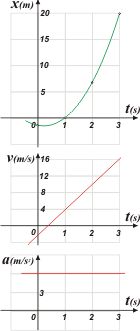

|
NO ME SALEN
(EJERCICIOS RESUELTOS Y APUNTES TEÓRICOS DE FÍSICA)
Funciones
|
|

|
| |
2.13- Dada la ecuación x(t) = 3t² – 2t – 1, dónde x se expresa en metros y t en segundos.
a) Calcular la derivada de x(t), x’(t), en los puntos
t = 0 s, 1 s, 2 s y 3 s. ¿Qué unidades tiene x’(t)?
b) Graficar en un mismo gráfico x(t) y sus
derivadas evaluadas en los puntos del item a).
c) Calcular la derivada segunda de x(t), x"(t),
en los puntos t = 0 s, 1 s, 2 s y 3 s. ¿Qué unidades
tiene x"(t)?
d) Graficar en un mismo gráfico x’(t) y sus
derivadas, evaluadas en el item c).
|
| |
Este es un ejercicio es otro súper clásico, y en este caso orientado hacia la cinemática, porque qué es la cinamática si no la 'descripción de la relación entre la posición (x) y el tiempo (t). Reescribamos la función y calculemos sus 2 primeras derivadas.
x(t) = 3t² – 2t – 1
x'(t) = 6t – 2
x"(t) = 6
A la derivada de la posición se la llama velocidad y la la derivada de la velocidad aceleración (segunda derivada de la posición).
Calcular los valores de esas 3 funciones en varios instantes es tarea sencilla, podés hacerlo sin mi ayuda. Vamos a volcar todo en una tabla de valores: |
|
|
| instante |
t |
(s) |
0 |
1 |
2 |
3 |
| posición |
x(t) |
(m) |
– 1 |
0 |
7 |
20 |
| velocidad |
x'(t) |
(m/s) |
– 2 |
4 |
10 |
16 |
| aceleración |
x"(t) |
(m/s²) |
6 |
6 |
6 |
6 |
|
|
|
En este caso no tiene sentido hacer los tres gráficos superpuestos porque no se trata de funciones numéricas sino de funciones que describen fenómenos diferentes. |
|
|
|  |
La escala de posiciones que se mide en metros, no tienen nada que ver con la de velocidades que se mide en metros sobre segundo ni con la de aceleración que se mide en metros sobre segundos al cuadrado.
Sí, en cambio se pueden graficar en forma encolumnada, o, como yo la llamo: en tándem. El orden sí interesa y debe ser el mismo con el que hice la tabla. Y, fundamentalmente, la escala de tiempo debe ser la misma para los tres.
Podés observar que cuando la velocidad se hace 0, la parábola que describe la posición alcanza su vértice.
también podés observar que la aceleración es constante, por ello la velocidad aumenta linealmente y su curva no cambia la pendiente, ja, ja... es recta. |
|
|
|
| |
|
|
| DESAFIO: ¿Cuáles son las raíces de la función original? |
|
 |
| |
|
| |
|
| Algunos derechos reservados.
Se permite su reproducción citando la fuente. Última actualización mar-16. Buenos Aires, Argentina. |
|
|
| | |
|
|